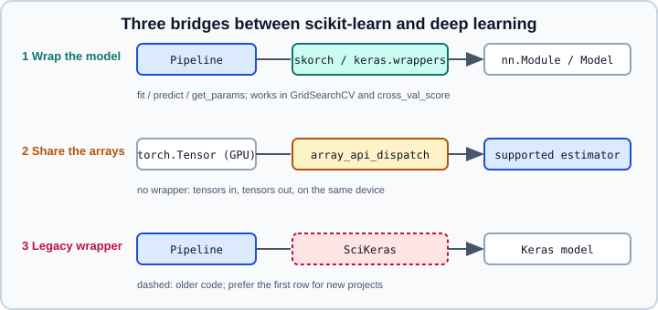

Using scikit-learn with PyTorch & Keras
|
This content was generated with the assistance of AI and should be verified against the official documentation before being relied on in production. |
Deep-learning models and scikit-learn solve different parts of a project. scikit-learn gives you preprocessing, pipelines, cross-validation, search and metrics; PyTorch and Keras give you models that scikit-learn does not have. This page shows how to use both at once without rewriting either side: wrapping a deep-learning model as a scikit-learn estimator, and the reverse direction, feeding deep-learning tensors to scikit-learn. It targets Python 3.13, PyTorch 2.15, TensorFlow 2.21 with Keras 3.15 and scikit-learn 1.9 and was checked on 2026-10-30 against the official documentation of each project. Examples were run on Python 3.13 with scikit-learn 1.9.1, PyTorch 2.15.0 (CPU), skorch 1.4.0 and Keras 3.15.1 (PyTorch backend) on 2026-10-31. When a plain scikit-learn model is enough, stay with MLPClassifier & MLPRegressor; the point at which you outgrow it is discussed in From scikit-learn to Deep Learning and Choosing a Framework.

Which bridge to use
-
Wrap the model (skorch for PyTorch,
keras.wrappersfor Keras 3). The deep-learning model becomes an estimator withfit,predictandget_params, so it can sit in a Pipeline, be cloned, cross-validated (Cross-Validation) and tuned with GridSearchCV. You pay for it with a thinner control over the training loop. -
Share the arrays (Array API dispatch, experimental). Supported scikit-learn estimators accept PyTorch tensors, even on a GPU, and return tensors, so a preprocessing step needs no round trip through NumPy. See also Array API and GPU Support; this page does not repeat it.
-
Keep them separate. Train the network with its own loop (PyTorch training loop, Keras training) and use scikit-learn only for metrics, splitting and preprocessing. This is often the best answer when the training loop is the interesting part, for example custom losses, multiple optimisers or distributed training.
skorch: PyTorch modules as estimators
skorch is a separate, community-maintained library (not part of PyTorch or scikit-learn) whose classes NeuralNetClassifier, NeuralNetBinaryClassifier and NeuralNetRegressor wrap an nn.Module class. The PyPI release at the check date is 1.4.0 (May 2026), whose documentation lists the last four PyTorch minor releases as supported; it needs a PyTorch it supports, so check the matrix when you pin versions. The wrapper builds the module, optimiser, criterion, data loaders and training loop, and exposes everything as scikit-learn parameters using the double-underscore convention: module__num_units, optimizer__momentum, iterator_train__shuffle, and so on. That is what makes GridSearchCV and clone work (see get_params, set_params and clone).
pip install skorch torch scikit-learnThe next listing builds a classifier, puts it in a pipeline with a scaler, cross-validates it and searches over a module parameter and the learning rate.
import numpy as np
import torch
from sklearn.datasets import make_classification
from sklearn.model_selection import GridSearchCV, cross_val_score
from sklearn.pipeline import Pipeline
from sklearn.preprocessing import StandardScaler
from torch import nn
from skorch import NeuralNetClassifier
X, y = make_classification(1000, 20, n_informative=10, random_state=0)
X = X.astype(np.float32) # torch layers use float32 by default
y = y.astype(np.int64) # class labels are int64
class MLP(nn.Module):
def __init__(self, num_units=32, dropout=0.2):
super().__init__()
self.net = nn.Sequential(
nn.Linear(20, num_units), nn.ReLU(), nn.Dropout(dropout),
nn.Linear(num_units, 2),
)
def forward(self, X):
return self.net(X) # logits, because the criterion is CrossEntropyLoss
torch.manual_seed(0)
net = NeuralNetClassifier(
MLP,
criterion=nn.CrossEntropyLoss,
max_epochs=15,
lr=0.05,
optimizer=torch.optim.SGD,
optimizer__momentum=0.9,
iterator_train__shuffle=True,
train_split=None, # no internal validation split
verbose=0,
)
pipe = Pipeline([("scale", StandardScaler()), ("net", net)])
pipe.fit(X, y)
print(pipe.predict_proba(X[:2]), pipe.score(X, y))
print(cross_val_score(pipe, X, y, cv=3))
grid = GridSearchCV(
pipe,
{"net__module__num_units": [16, 64], "net__lr": [0.01, 0.05]},
cv=3, refit=False,
)
grid.fit(X, y)
print(grid.best_params_, grid.best_score_)Points that decide whether this works:
-
Dtypes. Inputs must be
float32and classification labelsint64, as the quickstart does. Afloat64matrix (the default of NumPy and pandas) fails inside PyTorch with a "mat1 and mat2 must have the same dtype" error. Put the cast in the pipeline (for exampleFunctionTransformer(lambda X: X.astype(np.float32))) when the data comes from aColumnTransformer. -
Criterion and output. The default criterion of
NeuralNetClassifierisNLLLoss, and the documentation says the module should then return probabilities, because the logarithm is applied in the loss. Withnn.CrossEntropyLossthe module returns logits and the prediction methods apply a softmax:predict_nonlinearity="auto"infers softmax forCrossEntropyLossand a sigmoid forBCEWithLogitsLoss. Pass the criterion as a class (as above) and skorch instantiates it, so its arguments can usecriterion__weight. Never combine a softmax output withCrossEntropyLoss: it applies the softmax twice (see Loss functions). -
Internal validation split. By default skorch holds out part of the training data for validation and reports a validation loss each epoch. The listing sets
train_split=Nonefor plain use inside cross-validation, where the outer split already provides held-out data; otherwise you train on less data than you think. -
Regression targets.
NeuralNetRegressorexpectsywith shape(n_samples, 1). A one-dimensionalyruns, but PyTorch warns that target and output sizes differ and the loss is computed with broadcasting, which can silently give wrong results. Reshape withy.reshape(-1, 1)and, if needed, flatten predictions. -
Reproducibility. Seed PyTorch (
torch.manual_seed) and the data split; skorch does not make the training deterministic by itself (see Reproducibility). -
Devices and persistence. Pass
device="cuda"to train on a GPU, and persist withnet.save_paramsor pickle following the usual warnings (Model Persistence and Security).
Callbacks are skorch’s own mechanism (checkpointing, learning-rate schedulers, early stopping, scoring), unrelated to the experimental scikit-learn callbacks of Callbacks: Progress & Scoring Monitoring:
import numpy as np
from torch import nn
from skorch import NeuralNetRegressor
from skorch.callbacks import EarlyStopping
X = np.random.RandomState(0).randn(200, 4).astype(np.float32)
y = X.sum(axis=1).astype(np.float32).reshape(-1, 1) # 2-D target
class Reg(nn.Module):
def __init__(self):
super().__init__()
self.lin = nn.Linear(4, 1)
def forward(self, X):
return self.lin(X)
net = NeuralNetRegressor(
Reg, max_epochs=200, lr=0.05,
callbacks=[EarlyStopping(patience=5)], # monitors valid_loss of the internal split
verbose=0,
)
net.fit(X, y)
print(len(net.history), "epochs run")For more on training a plain PyTorch model and the ecosystem around it, see PyTorch ecosystem.
Keras 3: the keras.wrappers estimators
Keras 3 ships scikit-learn-compatible wrappers in keras.wrappers: SKLearnClassifier, SKLearnRegressor and SKLearnTransformer, each with the signature (model, warm_start=False, model_kwargs=None, fit_kwargs=None). They belong to Keras 3, which supports several backends (see Keras multi-backend). The listing below uses the PyTorch backend and also runs unchanged on the TensorFlow backend. The documentation does not say in which release they were added.
-
modelis either a compiledModelor a callable returning a compiled model. AModelinstance is cloned withkeras.models.clone_modelbefore each fit, unlesswarm_start=True, so the instance you pass is never the one that trains. A callable must accept at leastXandyas keyword arguments, which lets it size the input and output layers from the data; other arguments come frommodel_kwargs. -
fit_kwargsis passed tomodel.fit(epochs, batch size, callbacks), and values given directly to the wrapper’sfittake precedence. -
Fitted attributes:
model_(the trained Keras model),history_for the classifier and transformer, andclasses_for the classifier.
import os
os.environ["KERAS_BACKEND"] = "torch" # or "tensorflow" / "jax"; set before importing keras
import numpy as np
import keras
from keras import layers
from keras.wrappers import SKLearnClassifier
from sklearn.datasets import make_classification
from sklearn.model_selection import cross_val_score
from sklearn.pipeline import make_pipeline
from sklearn.preprocessing import StandardScaler
def build(X, y, units=16):
n_classes = y.shape[1] # the wrapper passes y one-hot encoded
model = keras.Sequential([
layers.Input(shape=(X.shape[1],)),
layers.Dense(units, activation="relu"),
layers.Dense(n_classes, activation="softmax"),
])
model.compile(loss="categorical_crossentropy", optimizer="adam", metrics=["accuracy"])
return model
X, y = make_classification(600, 10, n_informative=6, random_state=0)
clf = SKLearnClassifier(
model=build,
model_kwargs={"units": 32},
fit_kwargs={"epochs": 10, "verbose": 0},
)
pipe = make_pipeline(StandardScaler(), clf)
# clone() in Keras 3.15 drops fit_kwargs, so pass the fit arguments through cross_val_score
fit_params = {"sklearnclassifier__epochs": 10, "sklearnclassifier__verbose": 0}
print(cross_val_score(pipe, X, y, cv=3, params=fit_params))
pipe.fit(X, y)
print(pipe.predict(X[:5]), clf.classes_)Observed on Keras 3.15.1 with the PyTorch backend:
-
The classifier one-hot encodes the labels before calling
model.fit. A model compiled withsparse_categorical_crossentropyand a two-unit softmax failed with a shape mismatch ("target.shape=torch.Size([32, 2])"), whilecategorical_crossentropyworked, which is why the listing uses it with integer labels and reads the number of classes fromy.shape[1]. The documentation’s own example usescategorical_crossentropywith integer labels frommake_classification, which agrees. -
The wrapper exposes
fit,predict,score,get_paramsandset_paramsbut, in 3.15.1, nopredict_proba, so a pipeline ending in it has nopredict_probaeither. The documentation does not mentionpredict_proba; check the version you use if you need probabilities, or extractmodel_and callmodel_.predictyourself. -
The wrapper’s
__sklearn_clone__keepsmodel,warm_startandmodel_kwargsbut dropsfit_kwargs. Every clone made bycross_val_scoreorGridSearchCVtherefore trains for a single epoch with the default verbosity: withfit_kwargsalone the listing’s fold scores were 0.70, 0.65 and 0.58 instead of the 0.795, 0.74 and 0.775 it printed with the fit arguments passed throughparams=(prefixed with the pipeline step name), as in the listing. -
get_paramsshows the nested parameters (model_kwargs), so the wrapper clones insidecross_val_scoreandGridSearchCV; to tune a hyperparameter of the builder, search over the wholemodel_kwargsdictionary, sincemodel_kwargs__unitsis not a separate parameter.
SKLearnTransformer is a scikit-learn transformer (a step that maps X to a new representation, for example the output of an encoder) and not a Transformer neural network. The documentation recommends wrapping it in FrozenEstimator (scikit-learn 1.6 and later) when it is already trained, so a pipeline does not refit it; see FrozenEstimator. A typical use is a pretrained embedding network feeding a gradient-boosting model:
from keras.wrappers import SKLearnTransformer
from sklearn.ensemble import HistGradientBoostingClassifier
from sklearn.frozen import FrozenEstimator
from sklearn.pipeline import make_pipeline
# `encoder` is an already trained and compiled Keras model that returns features;
# `X`, `y` are your data; the listing needs your own trained encoder.
embed = FrozenEstimator(SKLearnTransformer(model=encoder))
pipe = make_pipeline(embed, HistGradientBoostingClassifier())
pipe.fit(X, y)Remember that Keras models are random at initialisation and during training (see Keras training) and that, as with skorch, a wrapped model trains on the data of each cross-validation fold from scratch, which multiplies the cost.
Array API: scikit-learn on PyTorch tensors
The reverse direction needs no wrapper. When Array API dispatch is on, supported scikit-learn estimators and metrics accept arrays from other libraries (PyTorch, CuPy, dpnp) and keep the data on its device. The feature is experimental, and the documentation reserves the right to break compatibility. To enable it, set the configuration array_api_dispatch=True (for one block with config_context, or globally with sklearn.set_config) and set the environment variable SCIPY_ARRAY_API=1 before importing SciPy and scikit-learn. The libraries scikit-learn runs automated compliance tests against are PyTorch (CPU, CUDA, MPS, XPU), CuPy (CUDA) and dpnp (CPU, Intel GPU); other array API libraries such as JAX are not on that list and might work, but are not tested (source: Array API support).
import os
os.environ["SCIPY_ARRAY_API"] = "1" # before importing SciPy or scikit-learn
import torch
from sklearn import config_context
from sklearn.datasets import make_classification
from sklearn.discriminant_analysis import LinearDiscriminantAnalysis
device = "cuda" if torch.cuda.is_available() else "cpu"
X_np, y_np = make_classification(random_state=0)
X = torch.asarray(X_np, device=device, dtype=torch.float32)
y = torch.asarray(y_np, device=device, dtype=torch.float32)
with config_context(array_api_dispatch=True):
lda = LinearDiscriminantAnalysis()
X_trans = lda.fit_transform(X, y)
print(type(X_trans), X_trans.device.type) # a torch.Tensor on the device of XOn a CPU-only machine this printed <class 'torch.Tensor'> cpu; the CUDA path needs an NVIDIA GPU and was not executed.
The rules to remember, from the 1.9 documentation:
-
Estimators: “everything follows
X”. Other array inputs are converted to the namespace and device ofX, and the fitted attributes live there too. Passing data from another namespace or device topredictortransformraises an error, so keep training and inference on the same device. -
Scoring functions: “everything follows
y_pred”. -
Supported estimators in 1.9 include
PCA(some solvers),Nystroem,LogisticRegressionandPoissonRegressorwithsolver="lbfgs",Ridge,RidgeClassifier,RidgeCV,LinearDiscriminantAnalysis,GaussianNB,GaussianMixture, many scalers and preprocessors,FeatureUnion, and the search classes when the base estimator supports it, along with about sixty metrics. The 1.9 release addedLogisticRegression,PoissonRegressor,Nystroem,RidgeCVandFeatureUnionamong others, and the 1.9.1 patch release fixed two Array API bugs (pandas labels in classification metrics, and negative-stride arrays passed totorch.from_dlpack). -
GPU caveats: some operations use
float64internally, and on PyTorch MPS (Apple) and some Intel GPUs scikit-learn falls back tofloat32, which can be numerically unstable; MPS support is incomplete and not necessarily faster than the CPU. -
For testing without a GPU use the
array-api-strictlibrary.
For converting between NumPy, PyTorch and DLPack by hand, see NumPy and DLPack and devices and accelerators.
SciKeras (legacy)
SciKeras (scikeras.wrappers.KerasClassifier and KerasRegressor) was the community successor of the wrappers that used to live in Keras and TensorFlow. Its GitHub repository was archived by its owner on 2026-04-01 and is read-only; its README states a dependency on scikit-learn 1.4.1 or newer and Keras 3.2 or newer. Do not start new projects on it: use keras.wrappers or skorch. Tutorials that import KerasClassifier from tensorflow.keras.wrappers.scikit_learn describe an API that no longer exists in current TensorFlow; those wrappers were removed, as discussed in TensorFlow ecosystem and status and Choosing a Framework. Existing code that already uses SciKeras still works for as long as its dependencies allow, but plan a migration to keras.wrappers, whose parameters are named differently (model, model_kwargs, fit_kwargs).
Pitfalls
-
Mixing dtypes: NumPy and pandas default to
float64, PyTorch tofloat32. -
The loss and output pairing (logits with
CrossEntropyLoss, probabilities withNLLLoss). -
Leaking test data through the wrapper: fit scalers inside the pipeline, not before splitting (see Common Pitfalls).
-
Cost: cross-validating or grid-searching a neural network trains it once per fold and candidate. Use fewer folds, small epochs for the search, and consider a dedicated tuner (Keras Tuner) or tuning at scale.
-
Expecting Array API dispatch to speed up everything: only the listed estimators dispatch, and small problems are slower on a GPU.
-
Treating a deep-learning wrapper as a drop-in for tabular data: for tables, gradient-boosted trees usually win (see Tabular Data: Gradient Boosting vs Deep Learning).